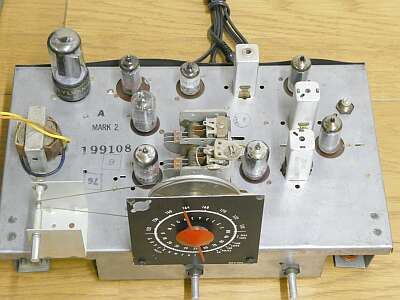 |
シャーシ上面 全体の様子です
極めてシンプルに作られています |
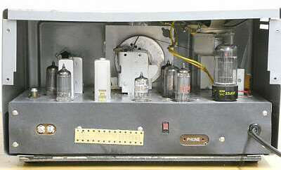 |
リア・パネルを外して写しました |
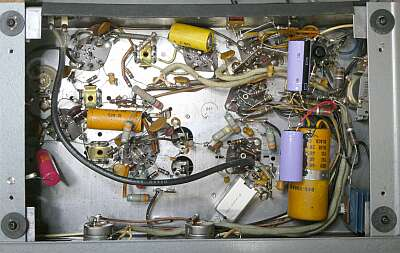 |
底板を外した様子です
青っぽいチューブラ型コンデンサは、＋Ｂラインに追加した平滑コンデンサです
|
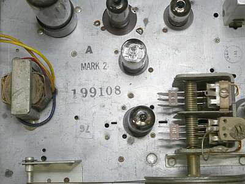 |
製番の上に、MARK 2とあります
これに気付くのが遅れました
MARK1とは、大きく異なるのは
１．アンテナ入力インピーダンスは、５０Ω
１は、３００Ω
２．ＲＦ増幅は、１２ＡＴ７ カスコードアンプ
１は、６ＡＢ４のＧＧアンプ
あと、２ｎｄＩＦ回路が変更されているくらいだと思います |
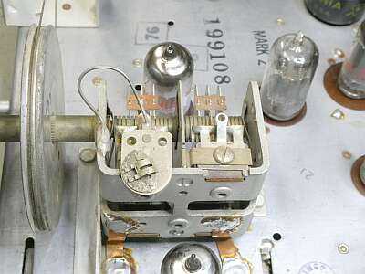 |
この逆Ｕ字の形をしたメッキ線
これがＯＳＣコイルです
２連ＶＣ
変換用オシレータと、ＲＦ同調に使われています
また駆動は、お馴染みの糸掛けです |
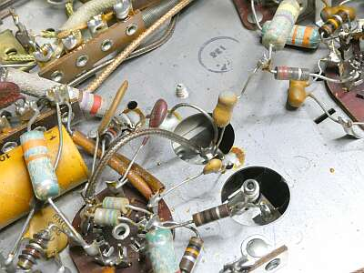 |
中央の逆Ｕ字のメッキ線が、ＲＦ同調コイルです
ＶＣの真下です
〇穴の向こうは、ＶＣステーターです
ＤＥＬＩＣＡのＶＨＦコンバータを見ているような・・・ |
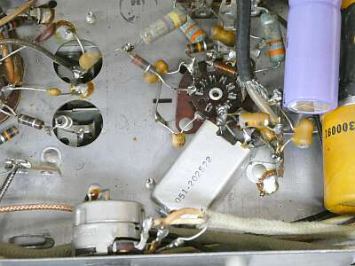 |
シールドケースに収まったものがＲＦ入力トランス
MARK1には無かったものです |
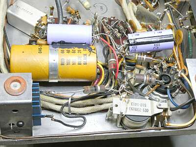 |
右下のリレーがＳＱ（スケルチ）機能を担っています
その奥に見えるＡＦパワー段「５０Ｌ６ＧＴ」のグリッドＧ１を接地してＳＱ-ＯＮです
なんとも荒っぽいＳＱです（メカ方式)！
青っぽいチューブラ型コンデンサは、＋Ｂラインｊに追加したものです |
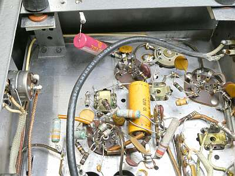 |
赤色のコンデンサで、シャーシとケースの間を結んでいます
これを外さないとケースが外せない！ |
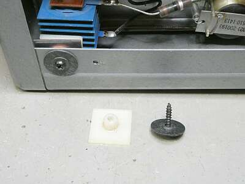 |
トランスレスで感電防止策
マウント・ベースと、ゴムブッシングを使って絶縁してあります
上手く考えられています
左上に見えるヒートシンク状のものは、セレン整流器です
アンテナ接続端子も、もちろん「C」で、シャーシとは絶縁されています |
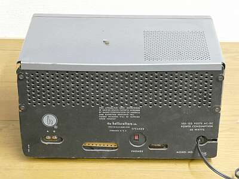 |
リアパネルを取り付けた、いわば製品の後ろ姿です
天板の上に忘れ物・・・
左端の２Ｐ端子が、アンテナ接続端子です
中央のＳＷは、内蔵スピーカーと外部スピーカーの切替
ＳＷの右が、外部スピーカー接続端子です |
|
今回は、感度が思うように得られないことに悩みました
もっともスペックも見つからない・・・
まず電気的なこと
作業途中で、本機がMARK2であるこに気付き、MARK1とばかり思っていて、その違いがよく分からず、実物から回路を起こして悩んでいたところで、web上にMARK2の資料を見つけました
一番大きく影響していたことは、＋B電圧が低いこと、平滑コンデンサの容量抜けに起因したことで、基本中の基本を見落として悩んでいました（そんなに酷いHumは出ていなかった）
あとは検波管１２ＡＬ５の劣化
そして調整により、ある程度の感度が得られました
１０μVの入力信号でＳＱがオープンします
まだ感度不足な気はするのですが、ここまでとしました
最後に、ＡＣコードのプラグの根元が劣化して、２線とも中の銅線が見える状態だったので、新しいセパラ付きのＡＣコードに交換しました |